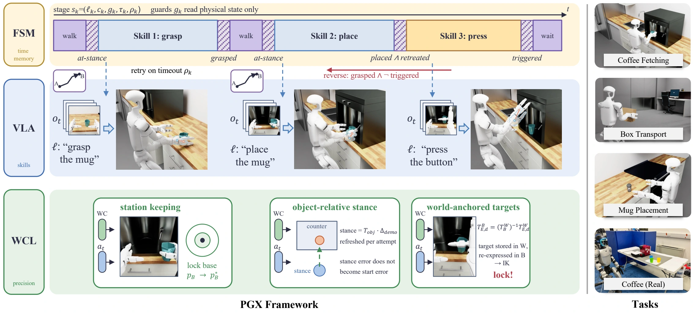
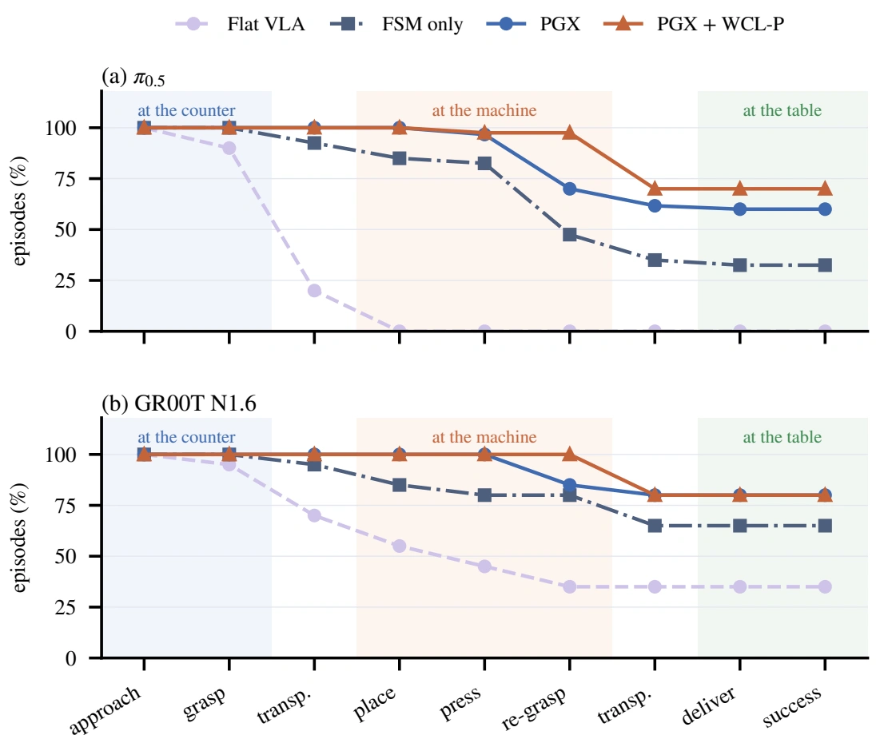
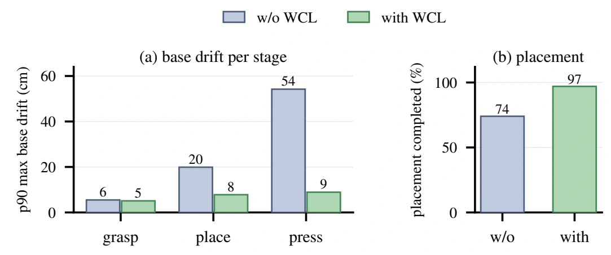
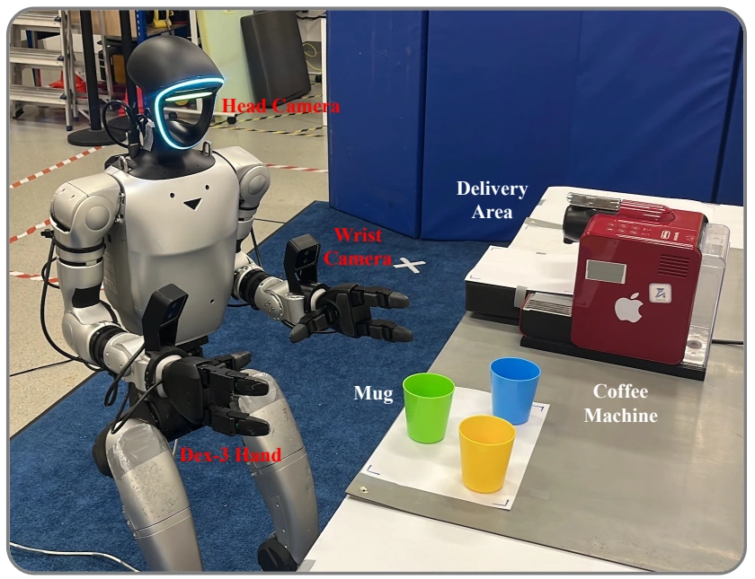
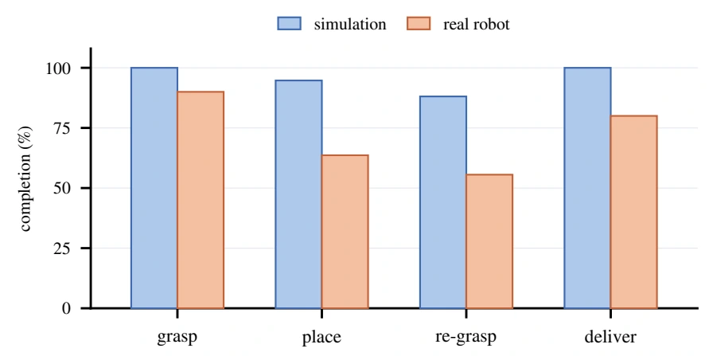

01 Timing
Predicate-gated state machine
Enter the next stage when its physical guard is satisfied. Timeouts trigger retries, while reverse transitions recover from premature progression. Navigation and waiting are handled by the executor.
ICRA 2027 (Anonymous submission)
A structured execution framework combining predicate-based task progression, VLA skills, and world-frame spatial stabilization.
Vision-language-action (VLA) models can execute individual manipulation skills, but long-horizon humanoid loco-manipulation also requires reliable task progression and spatial precision. Physically Grounded Execution (PGX) separates these responsibilities into three layers: a predicate-based state machine controls transitions, recovery, navigation and waiting; the VLA executes skills within active manipulation stages; and world-coordinate locking (WCL) maintains spatial consistency through station keeping, object-relative positioning and world-anchored contact targets.
PGX decouples timing and world-frame precision from the learned policy, allowing the VLA to focus on transferable manipulation skills. Physical structure determines when and where to act; the VLA learns how.

Predicate-gated state machine
Enter the next stage when its physical guard is satisfied. Timeouts trigger retries, while reverse transitions recover from premature progression. Navigation and waiting are handled by the executor.
Vision-language-action policy
Execute manipulation skills from an executor-prepared start state. PGX supports flat or stage-trained VLA skills; stage-wise training is optional and its effect is model-dependent.
World-coordinate locking
Compute navigation goals from the current object pose, hold the base at its manipulation-entry position, and anchor precise contact targets in the world frame.
Experiments use a Unitree G1 in Isaac Lab Arena, with at least 20 evaluation episodes per cell. We report end-to-end task success separately from intermediate stage progress.
The first two result columns below keep the VLA weights and task-level instruction fixed. The final column uses a stage-trained skill model. This comparison isolates the effect of the execution framework from that of skill training.
| Backbone / condition | Flat execution | PGX + flat skills | PGX + stage skills |
|---|---|---|---|
| π₀.₅ (C0) | 0 | 60 | 60 |
| π₀.₅ (C1) | 0 | 60 | 55 |
| GR00T N1.6 (C0) | 35 | 80 | 35 |
| GR00T N1.6 (C1) | 20 | 80 | 35 |
C0: nominal initial pose. C1: randomized initial pose. Stage-wise training is model-dependent; flat GR00T skills perform better on coffee fetching in this evaluation.

Percentage of episodes reaching each stage with π₀.₅ (top) and GR00T N1.6 (bottom).
PGX executes the coffee task with navigation, machine interaction and delivery.
A second VLA backbone executes the task within the PGX framework.
| Task | Backbone | Nominal (C0) | Random initial pose (C1) | ||
|---|---|---|---|---|---|
| Flat | PGX | Flat | PGX | ||
| Box transport | GR00T N1.6 | 55 | 75 | 20 | 45 |
| π₀.₅ | 10 | 90 | 5 | 60 | |
| Mug placement | GR00T N1.6 | 15 | 65 | 5 | 70 |
| π₀.₅ | 0 | 75 | 0 | 90 | |
| Coffee fetching | GR00T N1.6 | 35 | 80 | 20 | 80 |
| π₀.₅ | 0 | 60 | 0 | 55 | |
C1 adds uniform offsets of ±0.30 m in both translation axes and ±30° yaw. Time budgets are 40 s, 60 s and 110 s for box, mug and coffee, respectively. PGX uses stage-trained skills for box and mug; coffee uses stage-trained π₀.₅ and flat-trained GR00T. These comparisons do not all hold policy weights fixed.

PGX is deployed on a Unitree G1 with Dex-3 hands. The VLA is fine-tuned on 44 real demonstrations; motion capture and joint states supply physical predicates. Simulation and real-world policies are trained separately.


PGX executes long-horizon coffee fetching, box transport and mug placement in simulation.
Head-camera view of PGX execution (4× speed).
Head-camera view of PGX execution (4× speed).
Bimanual carrying and placement in the target area.
Grasp, transport and placement of the mug in the target tray.